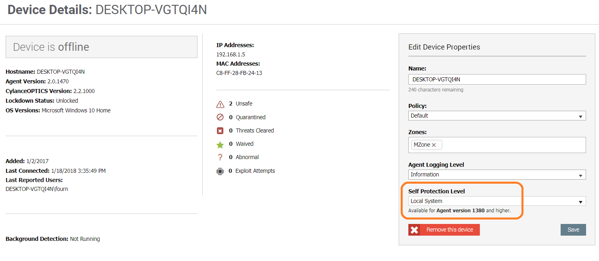
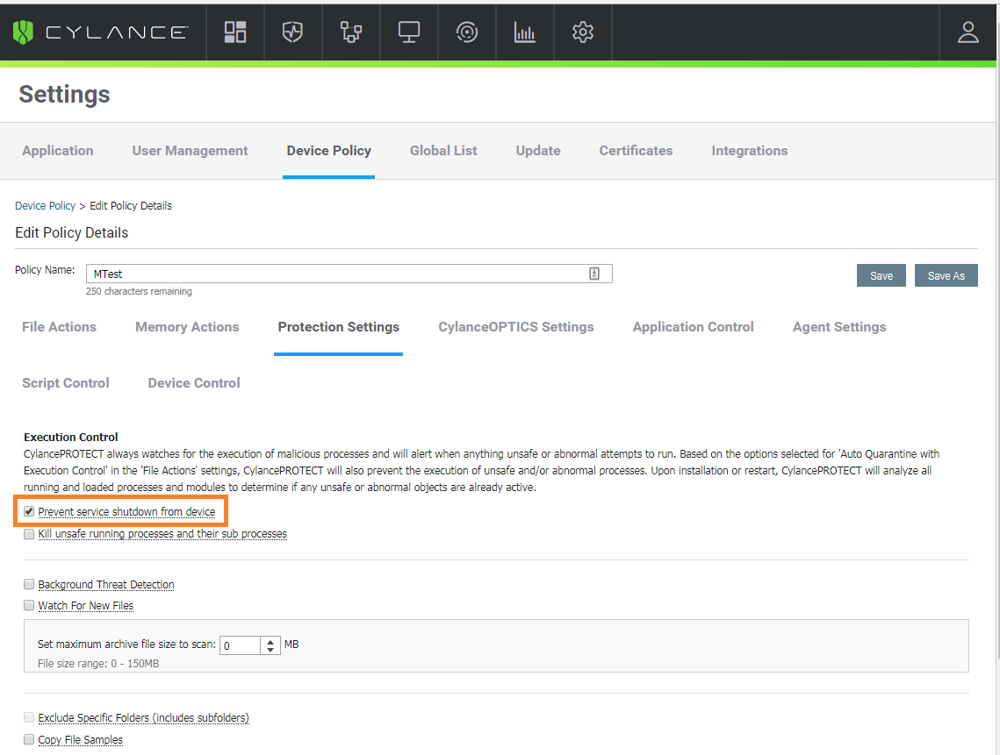

Device Classification for Cylance
Netskope offers the capability to leverage your existing Cylance EDR investment by configuring the Netskope client to look for Cylance processes on Windows and macOS devices. By defining Cylance processes in Device Classification, the Netskope client can determine if the Cylance software is running on devices. You can build different policies to allow or deny Cylance endpoint devices access to sensitive data.
Prerequisite
Before you begin you must ensure that Cylance is correctly set up to run on the endpoint.
Setting up Cylance to run on the endpoint
In the Cylance admin console, ensure that:
Under Device Details, set the Self Protection Level to Local System.
Under Settings > Device > Edit Policy Details, go to Protection Settings tab and select Prevent service shutdown from device.
For the latest information on the Cylance admin console and how to use it, refer to the Cylance documentation.
Defining Cylance processes in Device Classification
Go to Settings > Manage > Device Classification and click New Device Classification.
Select the type of operating system from the drop-down to classify devices that are running the Cylance software. Click Next.
Click Next on the following pages - Encryption, OPSWAT, and Registry.
To classify a managed device based on the presence of any one or more Cylance processes, enter the following executable file names, and then click +.
For Windows, enter:
CylanceUI.exe
CylanceSvc.exe
For macOS, enter:
CylanceUI
CylanceSvc
When finished, click Next.
To classify a device based on the presence of any one or more files, enter the file name, and then click +. When finished, click Next.
To classify a device associated to any one or more domains listed, enter the domain name, and then click +. When finished, click Next.
Click Next on the Certificates page.
Enter a name for the Cylance device classification and click Create.
You can build policies that use the Cylance device classification to find managed and unmanaged devices. Refer to Inline Policies for more information.